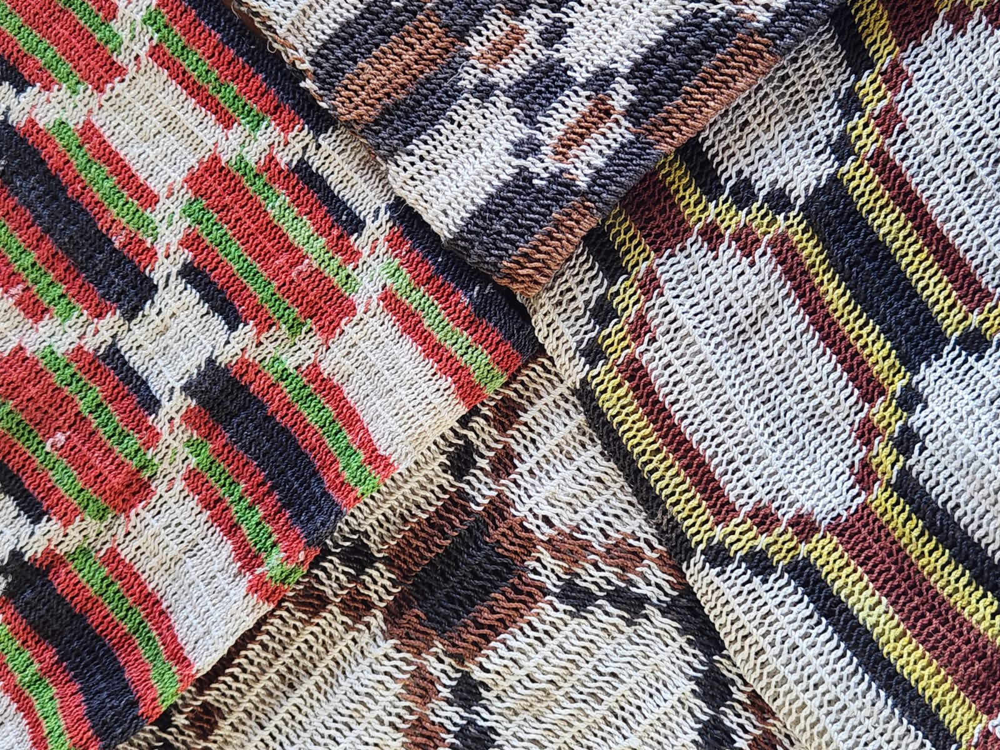
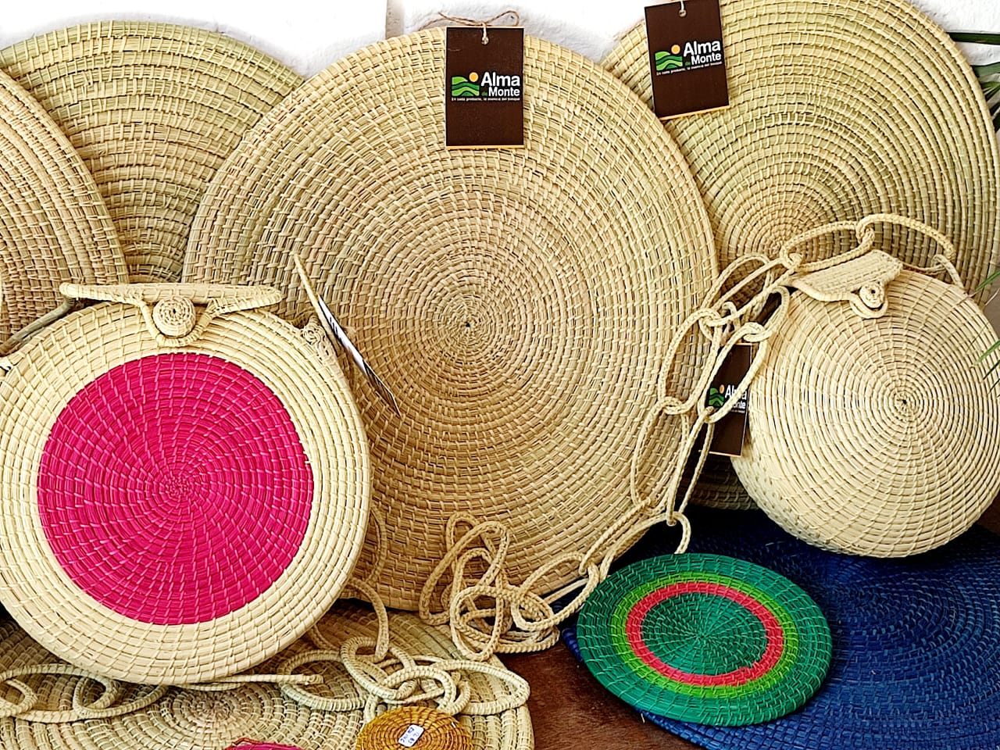
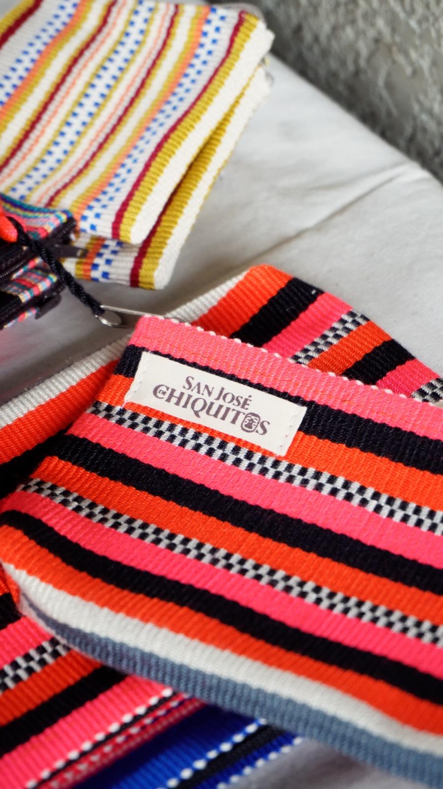
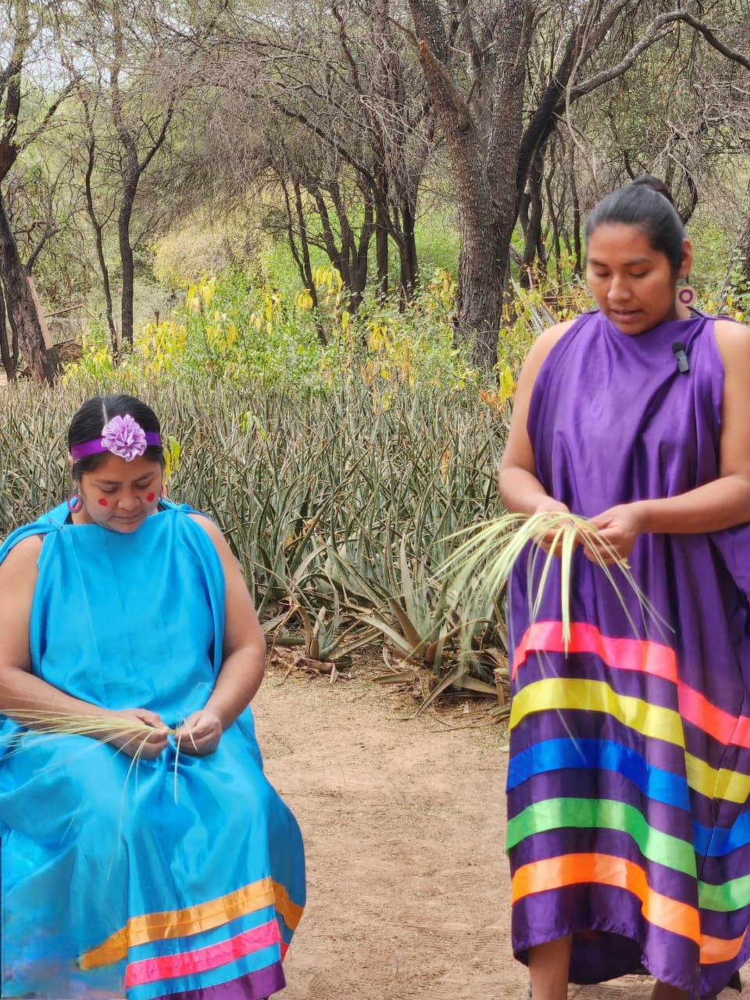
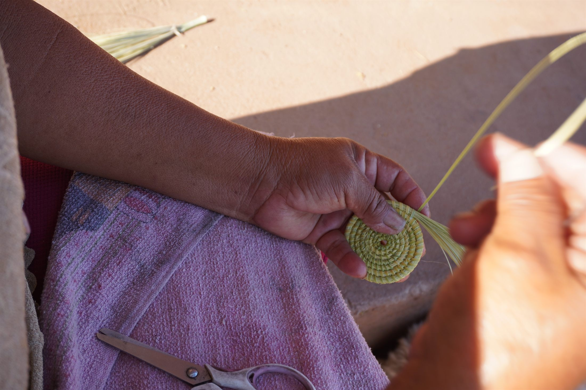

Apartado 03 · Línea productiva
Artesanías
Tejidos con palma y karawata de los pueblos Weenhayek y Guaraní: la demostración más antigua de que el bosque se sostiene en pie y genera ingresos.
El oficio
El bosque hecho artesanía.
Durante generaciones, los pueblos indígenas del Gran Chaco han dado valor a los productos del bosque, transformando fibras naturales y madera en artesanías que preservan su identidad cultural y conocimiento ancestral. Cada pieza refleja una relación respetuosa con la naturaleza, donde el uso sostenible de los recursos contribuye a conservar la biodiversidad, fortalecer las economías locales y mantener el bosque como base del bienestar de las comunidades.




Cada pieza artesanal pone en valor la biodiversidad, el territorio y los conocimientos ancestrales que le dan origen. Al reconocer ese valor, el bosque deja de ser solo un espacio por conservar y se convierte en la base de una economía que genera identidad, ingresos y oportunidades para las comunidades.
La materia prima
Las fibras del monte.
Todo empieza en el monte. Las artesanías del Gran Chaco nacen de la palma, la karawata y las maderas del bosque —materiales que las comunidades conocen desde siempre y cosechan siguiendo los ciclos de cada planta, sin agotar el recurso. Recolectar en el momento justo, dejar que la planta se recupere y volver la próxima temporada es, en sí mismo, una forma de conservar.
Cosechar sin agotar
Se recoge la fibra respetando los tiempos de la planta, para que el monte siga produciendo temporada tras temporada.
Preparar a mano
La palma y la karawata se limpian, secan y tiñen con recursos del propio bosque, sin químicos.
Tejer y tallar
Manos que heredaron la técnica transforman la fibra y la madera en piezas únicas, cada una con su historia.
Las manos
Quiénes tejen.
Detrás de cada pieza hay una comunidad. Los pueblos Weenhayek y Guaraní del Chaco boliviano guardan un conocimiento textil de siglos, que hoy se sostiene sobre todo en las manos de las mujeres. La Red de artesanas Alma de Monte reúne a siete grupos que trabajan juntos, comparten técnicas y llevan sus piezas al mercado.
Red de artesanas Alma de Monte
Siete grupos, 144+ Artesanos.
Karandai, Tetagüasu, Yukimbia, Kutsaaj Wet Jwitsuk, Bajo Luna, La Ceiba y Cichar: grupos de mujeres artesanas de los pueblos Guaraní y Weenhayek, unidos en una red que fortalece su trabajo y su ingreso.
El valor
Del monte al mercado.
Cuando estas piezas acceden a mercados que reconocen su origen —el trabajo artesanal, la fibra natural, el bosque conservado— conservar el monte deja de ser un sacrificio económico y se convierte en una condición de rentabilidad. El ingreso llega directo a las familias y, sobre todo, fortalece la autonomía económica de las mujeres, en comunidades donde muchas veces el bosque es el único capital disponible.
Datos clave
Grupos de mujeres artesanas en la Red de artesanas Alma de Monte.
Guaraní y Weenhayek, con su conocimiento textil ancestral.
Mujeres de los grupos Karandai, Tetagüasu, Yukimbia, Kutsaaj Wet Jwitsuk, Bajo Luna, La Ceiba y Cichar.
Palma, karawata y madera de regeneración natural del monte.
En el mapa
La Red de artesanas Alma de Monte, en el territorio.
Cada grupo está georreferenciado dentro del Gran Paisaje. Ubicalos en el geoportal, junto a los predios ganaderos y los centros apícolas.